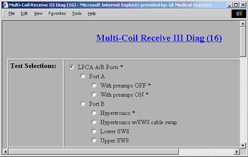
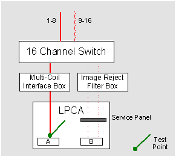
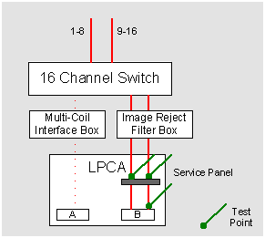
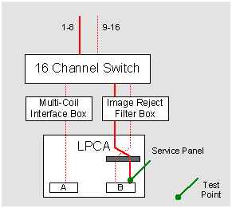

Proprietary to General Electric Company
Direction 5440000, Rev# 5
Signa HDxt Service Methods
Module Version 1.0, Version Date 4/26/07
Proprietary to General Electric Company |
Diagnostics>>RRF Chassis>>Multi-coil Receive Chain
The Multi-coil Receive III (MCR 3) diagnostic isolates receive signal problems between the LPCA and the 16-channel Switch.
The MCR 3 diagnostic is part of a suite of three diagnostics (MCR 3, 16-channel Switch, and System Cab) designed to isolate problems in the receive signal path. Based on the results of those three tests, the focus area can be determined. The MCR diagnostic should only be performed when the System Cabinet Loopback and 16-channel Switch diagnostics pass and a receive signal issue persists.
Test Selections:
Test Selections for the Diagnostic are shown in Illustration 1. When the default LPCA A/B Ports option is selected, both Port A tests are performed as well as the Port B Hypertronics test that collects two sets of data.
Illustration 1: Diagnostic Interface

When Port A is selected, the diagnostic runs the two Port A tests:
With preamps OFF
With preamps ON
When Port B is selected, the diagnostic runs the four (4) Port B tests:
Hypertronics
Hypertronics w/8W8 cable swap
Lower 8W8
Upper 8W8
Port A with Preamps OFF
This test verifies the signal path from Port A of the LPCA through the multi-coil interface box to the 16-channel Switch while the integrated preamps are off (see Illustration 2). This test ensures that preamps can be turned off.
Port A with Preamps ON
This test verifies the signal path from Port A of the LPCA through the multi-coil interface box to the 16-channel Switch while the integrated preamps are on (see Illustration 2). This test ensures that the preamps are functioning properly when On.
Illustration 2: Port A Test Points

Port B Hypertronics
This test verifies signal at the LPCA port. First, the signal data is routed from the 16-channel Switch across channels 1-8. Second, the signal data is routed from the 16-channel Switch across channels 9-16. In the event of signal issues, the next test can be performed in order to isolate the issue.
Port B Lower 8W8
This test verifies signal at the Service Panel inside the LPCA. This test provides the means to test the lower 8W8 cable (channels 9-16) from the service panel to the 16-channel Switch.
When there is a failure with the Hypertronics test, a passing Lower 8W8 test indicates a problem between the service panel and the Port B connector. Failure of this test indicates a problem between the 16-channel Switch and the Service Panel.
Port B Upper 8W8
This test verifies signal at the Service Panel inside the LPCA. This test provides the means to test the upper 8W8 cable (channels 1-8) from the service panel to the 16-channel Switch.
Presently, there is no means to field test the channels 1-8 between Port B and the service panel.
Illustration 3: Standard Port B Test Points

Port B Hypertronics with 8W8 cable swap
This test is similar to the Upper 8W8 test in that the upper 8W8 path from the service panel to the 16-channel switch is tested. In addition, the right set of pins in Port B of the LPCA are tested as well. See Illustration 4.
Illustration 4: Port B Cable Swap Test Point

LPCA Port(s)
Interconnects between the LPCA and the input side of the 16-channel Switch
Appropriate MCR 3 tool based on field strength.
Illustration 5: Multi-Coil Receive III Functional Block Diagram

To run the LPCA A/B Ports test
Connect the MCR 3 tool to Port A.
Click [Run].
Move the MCR 3 tool from Port A to Port B when instructed to do so and continue the test as instructed.
Examine the results and take the appropriate action. Review the error log for the next course of action, or reference the Troubleshooting Guidetroubleshooting guide.
For information on how to run all the test variations see the MCR Tool Procedures.
Review the error log and corresponding extended error messages for subsequent actions.
When executed in conjunction with the System Cabinet Loopback diagnostic, system problems can be isolated to one of the following:
Signal source – the Exciter
RRF Chassis’ receive chain – the MUX, UTNS, and receiver boards
16-channel Switch, cabling & hardware, and input port on the MUX boards
Related Links
Related Diagnostics